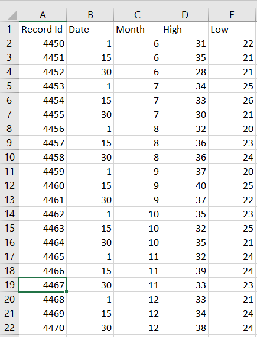

df <- read.csv("/Users/zacharyfisher/Dropbox/Macbook/UNC/Teaching/Courses/PSYC559/PSYC559-Site/data/ifood_df.csv")Reading in Data
Loading Data
One of the most important initial tasks you’ll face in R is reading in data. Let’s walk through some basics.
By reading in data we are generally refering to the process of importing data from a local directory on your computer, or from the web, into R. When we read a data file into R, we often read it in as a tabularobject where columns representing variables and rows representing cases. This is not always the case but covers the most basic use case.

Many different data file formats can be read into R as data frames, such as .csv (comma separated values), .xlsx (Excel workbook), .txt (text), .sas7bdat (SAS), and .sav (SPSS) can be read into R. We will mostly focus on the .csv case in this class.
Location of the Data File
One of the trickiest parts of loading data from your hard drive into R is knowing how to locate it. Depending on whether you are using a Mac or Windows machine you can read in .csv files directly if you know the path. For example, I can load a .csv file into R and save it as a data frame labeled df as follows:
Once the .csv file is loaded I can look at it using the View() function
View(df)or simple examine the first few cases using head()
head(df) Income Kidhome Teenhome Recency MntWines MntFruits MntMeatProducts
1 58138 0 0 58 635 88 546
2 46344 1 1 38 11 1 6
3 71613 0 0 26 426 49 127
4 26646 1 0 26 11 4 20
5 58293 1 0 94 173 43 118
6 62513 0 1 16 520 42 98
MntFishProducts MntSweetProducts MntGoldProds NumDealsPurchases
1 172 88 88 3
2 2 1 6 2
3 111 21 42 1
4 10 3 5 2
5 46 27 15 5
6 0 42 14 2
NumWebPurchases NumCatalogPurchases NumStorePurchases NumWebVisitsMonth
1 8 10 4 7
2 1 1 2 5
3 8 2 10 4
4 2 0 4 6
5 5 3 6 5
6 6 4 10 6
AcceptedCmp3 AcceptedCmp4 AcceptedCmp5 AcceptedCmp1 AcceptedCmp2 Complain
1 0 0 0 0 0 0
2 0 0 0 0 0 0
3 0 0 0 0 0 0
4 0 0 0 0 0 0
5 0 0 0 0 0 0
6 0 0 0 0 0 0
Z_CostContact Z_Revenue Response Age Customer_Days marital_Divorced
1 3 11 1 63 2822 0
2 3 11 0 66 2272 0
3 3 11 0 55 2471 0
4 3 11 0 36 2298 0
5 3 11 0 39 2320 0
6 3 11 0 53 2452 0
marital_Married marital_Single marital_Together marital_Widow
1 0 1 0 0
2 0 1 0 0
3 0 0 1 0
4 0 0 1 0
5 1 0 0 0
6 0 0 1 0
education_2n.Cycle education_Basic education_Graduation education_Master
1 0 0 1 0
2 0 0 1 0
3 0 0 1 0
4 0 0 1 0
5 0 0 0 0
6 0 0 0 1
education_PhD MntTotal MntRegularProds AcceptedCmpOverall
1 0 1529 1441 0
2 0 21 15 0
3 0 734 692 0
4 0 48 43 0
5 1 407 392 0
6 0 702 688 0Loading Data from the Working Directory
Another way to load data is to set the working directory to the folder where the data is located. This can be helpful if you are having trouble finding the path to the data. From RStudio, use the menu to change your working directory under Session > Set Working Directory > Choose Directory. Then set the working directory to the folder where you have stored your data. Conveniently, you will also now see a path to the data in your R console you can use to Copy-Paste a path. Now you can simply use the filename of the .csv file to read in the data. See the example below.

setwd("/Users/zacharyfisher/Dropbox/Macbook/UNC/Teaching/Courses/PSYC559/PSYC559-Site/data")
df <- read.csv("ifood_df.csv")In addition to setwd() you can also find what your current working directory is using the getwd() command.